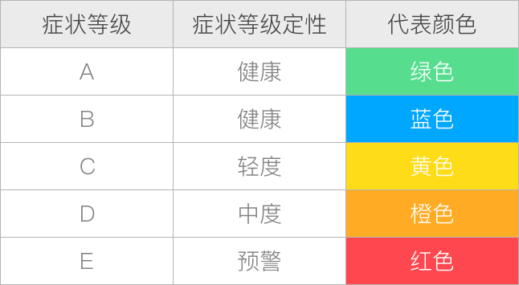

测评报告
报告标语
检测说明
心理健康检查是格略集团心理管理研究院联合中国心理卫生协会职业 心理健康促进专业委员会，根据员工的心理健康的典型行为样本进行开发河编制。检测从17个方面对心理发展状况进行普查， 分别为躯体反应、回避行为、幻想行为、自责行为、强迫行为、偏执心理、极端心理、人际适应、孤独按感受、依赖心理、 猜疑心理、焦虑情绪、冲动控制、抑郁倾向、恐惧心理、身心合一。
本检验采用自我陈述的方式进行普查，结果采用等级评估方式进行。详情见下表：

报告阅读建议
1、检测结果只能作为员工了解和发展自己及组织整体分析和员工帮助之用。 2、本检测仅作为员工心理发展状态的普查，不是心理障碍的医学诊断工具。 3、本检测不是个体心理状态的唯一工具、需要借助专家或者其他方法进行综合分析。 4、本检测的效度受很多因素的影响。
答题时是否存在内外部的干扰因素。
答题时有意无意的回避了真实情况。
理解是否与检验指标的内涵一致。
5、谨慎解读测评报告，不要误读、扭曲或夸大，必要时需要借助专业人士。 6、检测严格遵循心理测量的道德准则，保护员工隐私、尊重员工发展的权益。 7、本报告的专业解释由格略集团心理管理研究院执行，如需要帮助请联系我们。
联系电话：4008-505-885
电子邮箱：gelue@gelue.com
测评结果
总体描述性分析数据图
人际适应
36.55
典型特征
黄色指标：
躯体反应、偏执心理
橙色指标：
幻想行为、强迫行为
红色指标：
自责行为
详细解释
躯体反应
一般来说，您基本具有较好的身体状态，可能的表现为：
1、较少表现出明显的胃肠道症状，比如腹痛、腹胀、恶心、呕吐等。
2、较少表现出持久、严重且强烈的身体疼痛感。
3、较少表现出明显的身体疲劳感。
躯体反应
一般来说，您基本具有较好的身体状态，可能的表现为：
1、较少表现出明显的胃肠道症状，比如腹痛、腹胀、恶心、呕吐等。
2、较少表现出持久、严重且强烈的身体疼痛感。
3、较少表现出明显的身体疲劳感。